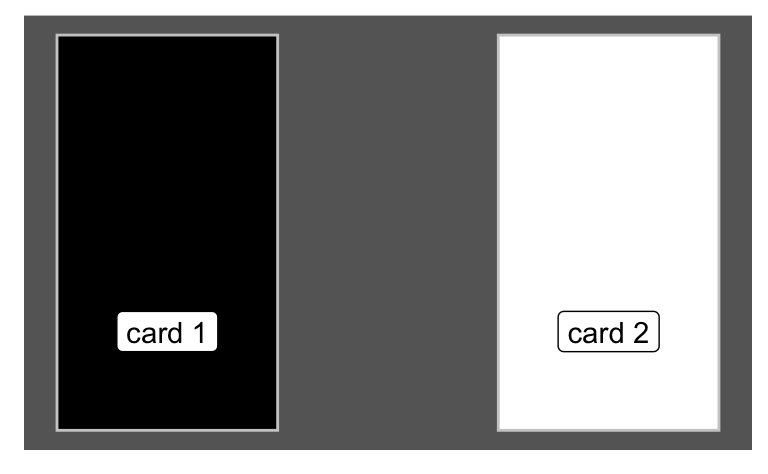

Aufgabe
This question is taken from McElreath, R. (2020). Statistical rethinking: A Bayesian course with examples in R and Stan (2. Ed.). Taylor and Francis, CRC Press.
2M7. Assume again the original card problem, with a single card showing a black side face up. Before looking at the other side, we draw another card from the bag and lay it face up on the table. The face that is shown on the new card is white. Show that the probability that the first card, the one showing a black side, has black on its other side is now 0.75. Use the counting method, if you can. Hint: Treat this like the sequence of globe tosses, counting all the ways to see each observation, for each possiible first card.
Lösung
Let’s label the cards bb (black on both sides), bw (black on one, white on the other), and ww (both sides are white), respectively.
To keep things straight, here’s a visualization of our data.
Wanted is the probability \(Pr(c1=bb|1b,2w)\), the probability of drawing (as card 1) a bb card, given that we observerd b in the first draw, denoted as 1b, and a white card in the second draw, denoted as 2w.
Let’s draw a tree diagram for easier comprehension.
In the diagram, the symbol “_b_w” means that black face of a the bw-card (one black, one white face) was drawn. Similarly, “_b_b” means that one (of the two) black faces of the bb-card (two black faces) was drawn.
Here, we have to consider two cards. Let’s use this notation ww-bb for the sequence “first card is white on both sides, second card is black on both sides”.
The data observed is: first card has one black side, the second card has one white side, i.,e b-w.
Looking at the tree, we realize that out of all 8 paths, 6 feature the bb card as first card:
\(Pr(1bb|b,w) = 6/8 = 3/4 = 0.75\)
where 1bb means “card 1 is black on both sides”, and b,w means “first draw showed a black face, and second card showed a white face”.
In other words, there are 8 valid paths in the tree diagram, out of which 6 belong the the hypothesis that the first card is all black.
Using a Bayes-Grid (or “Bayes-Box”), we can depict the situation like this:
| Hyp | Prior | L | unstand_Post | Post |
|---|---|---|---|---|
| bb | 1 | 6 | 6 | 6/8 = 3/4 |
| bw | 1 | 2 | 2 | 2/8 = 1/4 |
| ww | 1 | 0 | 0 | 0 |
Or, using probability, and not counts:
| Hyp | Prior | L | unstand_Post | Post |
|---|---|---|---|---|
| bb | 2 | 3/4 | 6/4 | 3/4 |
| bw | 1 | 2/4 | 2/4 | 1/4 |
Whenever the probability of all paths (in a tree diagram) is the same, as it is the case in the present example, we do not need to write down the probability of the path for the likelihood. It is enough to write the number of paths (of course we can if we want).
Categories:
- probability
- bayes
- bayes-grid
- rethink-chap2
- string